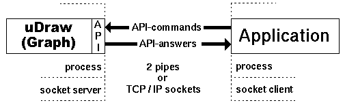

How to connect an Application to the API
From a technical point of view, communication between uDraw(Graph) and a connected application program is performed with two pipes. One is used to send commands to the uDraw(Graph) API, e.g. to transmit graphs, to attach menus/icons or to call menu functions. The other one is used to receive the answers, e.g. return values, user events, etc. Alternatively, bi-directional TCP/IP socket communication can be used where uDraw(Graph) acts as a socket server and the application program is a socket client. The following figure illustrates this approach:

Types of API communication
Only one application program can be connected with uDraw(Graph) at a time, but this client process is able to visualize many graphs in different windows at a time, see multi-graph/view/window modes. If there is a need to have many applications communicating with uDraw(Graph) in a system architecture scenario, then the application programmer has to provide a single "concentrator process" which synchronizes the communication between uDraw(Graph) and all individual applications.
Communication with Pipes
Choose which way to go
There are two options for connecting an application to the API with pipes. Either uDraw(Graph) is doing this job, which is the easiest way, or the application connects uDraw(Graph) in order to have more flexibility. The point is whether uDraw(Graph) or the application is the parent process. The advantage of the first solution where uDraw(Graph) is responsible for establishing connection is that the application programmer does not have to deal with process and pipe programming. In this case, all an application program has to do is sending commands to the API by printing on the standard output ("stdout") and receiving the answers from the API by reading from "stdin". Further, if uDraw(Graph) has launched the application process, the user will be able to disconnect the application later in order to connect another one.
The disadvantage of this solution is that the application's "stdin" and "stdout" have to be exclusively reserved for communication with uDraw(Graph). If more flexibility is needed, e.g. to use other file descriptors than "stdin" and "stdout", then the application has to establish the communication with uDraw(Graph) on its own, read below for details.
Either uDraw(Graph) connects the Application...
uDraw(Graph) is able to connect an application program at start-up time using command-line option -startappl or at run-time with menu File/Connect Application.... By connecting an application, uDraw(Graph) forks a new process, creates two pipes for communication, binds "stdin" and "stdout" of the new process to the end of the pipes and finally starts the specified application program. The application has to wait for the initial ok answer before commands are sent to the API. This is done by simply printing them on "stdout". Answers from the API are available for the application by reading from "stdin".
When the connection has been performed by uDraw(Graph), the user is able to shutdown the currently connected application at any time using menu File/Disconnect Application. But this only works in case of support by the application. It has to terminate after receiving answer disconnect.
... or the Application connects uDraw(Graph)
The application program has to start uDraw(Graph) on its own when the more comfortable method of connection (described above) is not suitable. To do so, the application has to perform the tasks described below (example code for establishing a pipe communication with uDraw(Graph) is provided in the distribution, look at the directory "simpleclient" in "samples"):
-
Forking a new process
This is the child process used for uDraw(Graph). -
Creating two pipes
One to send commands and the other one to receive answers from the API. -
Redirecting the file descriptors
"stdin" and "stdout" of the new child process (uDraw(Graph)) have to be connected with one side of both pipes. The parent process (application) has to connect two free file descriptors to the other end of both pipes. -
Start uDraw(Graph)
Execute uDraw(Graph) with command-line option -pipe in the forked child process.
Note: the application has to set line-buffered I/O before starting communication with uDraw(Graph) via pipes. For example, in "C" it can be done this way:
| Setting line-buffered I/O in UNIX®/Linux® |
|---|
| setbuf(stdout,NULL); setbuf(stdin,NULL); |
| Setting line-buffered I/O in Windows® |
|---|
| setvbuf(stdin,NULL,_IONBF,0); setvbuf(stdout,NULL,_IONBF,0); |
After establishing connection, uDraw(Graph) sends an initial ok answer for synchronization. The application must not start sending commands to the API before receiving this answer. uDraw(Graph) is unable to disconnect the application if it has not established the connection on its own. So, menu File/Disconnect Application is always deactivated for the connection method described in this paragraph.
Communication with TCP/IP Sockets
A more flexible way of communication is to use TCP/IP sockets instead of pipes. This way it is even possible to start uDraw(Graph) and the application program on different computers in a network or even at different sites. Please read the chapter above about pipe communication as well, because some pieces of information mentioned there are relevant for any type of communication.
uDraw(Graph) operating in Socket Server Mode
With socket communication, uDraw(Graph) always acts as the socket server
that listens on a specified port for connection requests from an
application.
Initiating the socket server mode can be done either at start-up
time using command-line option
-server
or at run-time with menu
File/Connect Application ....
In both ways, the socket port can be specified where uDraw(Graph)
should listen for connection requests and subsequent API commands.
If not specified, the standard port 2542 is used which has been
exclusively registered for uDraw(Graph) by the
After entering the socket server mode, uDraw(Graph) listens on the specified port until a socket connection request is received from an application program. Then the application is connected to the API and subsequent connection requests from other applications are ignored unless the connected application disconnects, because only one application can be connected to the API at a time. After the application has disconnected, uDraw(Graph) will automatically start listening again for connection requests when the command-line option -server has been used or as soon as another application is connected with menu File/Connect Application ... in socket server mode.
If a port ("old") has been specified with option -server and afterwards menu File/Connect Application ... is used with a different port ("new"), then uDraw(Graph) stops listening on the old port and immediately starts listening on the new port. After the application has disconnected in this case, uDraw(Graph) will start listening again on the old port.
Starting the Application as a Socket Client
An application program can be connected to the API as a socket client in two ways. One option is to simply execute the application program stand-alone after uDraw(Graph) has been started with command-line option -server. On the other hand, uDraw(Graph) can start the application by using menu File/Connect Application .... In this case, choose the communication type "TCP/IP Sockets" in the connection dialog.
In both cases, the application has to set up the communication by connecting to the uDraw(Graph) socket port as client. The way this can be done depends on the implementation language and libraries used for the application. Please consult your documentation and programming manuals for details or search for socket programming tutorials in the Internet. Example code for establishing socket communication with uDraw(Graph) is provided in the distribution, look under "simpleclient" in directory "samples".
You can test the socket communication using the graph editor application that can act as a socket client with appropriate command-line options.
| uDrawGraph(.exe) -server |
| grapheditor(.exe) -client |
This will connect the graph editor application to uDraw(Graph) using sockets. Both programs can even be executed on different computers that are connected by a network.
Testing API Transmission
After establishing a connection for the first time between your application and uDraw(Graph), you should test the transmission by sending command nothing several times to the API. The connection works when you receive the answer "ok" as a reply for each command that was sent to the API. uDraw(Graph) only accepts valid commands according to the API syntax. All other messages are treated as a syntax error by sending answer communication_error back to the application. Tip: You can play with the API by starting uDraw(Graph) in a command-line (i.e. shell) with option -pipe. Afterwards you can enter commands in the command-line to send them to the API. Do not forget to finish the command with the RETURN/ENTER key. The answers from the API are also displayed in the command-line in this case. You can find some examples for commands in the "samples/api" directory of the distribution.
Note: API commands must not have newline or return characters inside. They must have exactly one newline at the end of the command. No other characters, even no spaces must follow this concluding return, except of the next complete command. If these restrictions are not considered, communication with the API will likely fail.